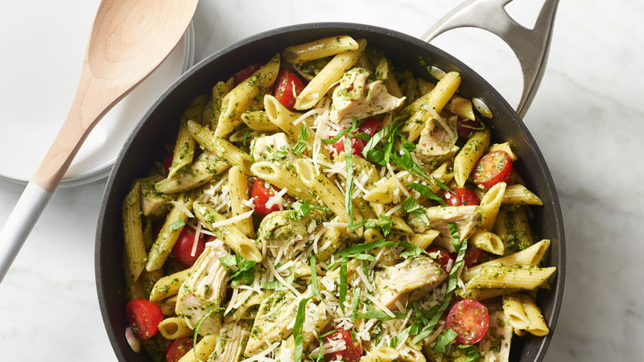

Pesto Pasta With Chicken And Tomatoes

Description
A light but delicious recipe for pesto pasta with chicken and tomatoes! Taken from Betty Crocker Recipes
Ingredients
Pesto Sauce
- 1 cup firmly packed fresh basil leaves
- 1/3 cup grated Parmesan cheese
- 1/4 cup olive oil
- 1 clove garlic
- 2 tablespoons sliced almonds, toasted
Pasta
- 12 oz uncooked penne pasta(3 1/2 cups)(from 16oz package)
- 3 cups Progresso chicken broth(from 32-oz carton
- 2 cups shredded cooked chicken
- 2 halved cherry tomatoes
- 1/4 cup julienned fresh basil leaves
- 3 tablespoons grated Parmesan cheese
Steps
- Place pesto ingredients in blender or food processor.
- Cover and process on medium speed for about 3 minutes, stopping occasionally to scrape down sides with rubber spatula until smooth. Set aside.
- In 4-quart saucepan, heat penne and broth just to boiling over high heat. Reduce heat to medium; cover and cook 8 to 10 minutes, stirring frequently, until al dente and liquid is almost absorbed. Remove from heat. Add pesto; stir in chicken and tomatoes; cook over medium 2 to 3 minutes or until thoroughly heated.
- Garnish with basil and 3 tablespoons Parmesan cheese
Return to main page